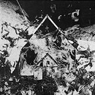
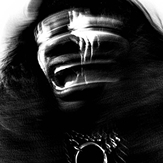
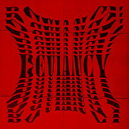

Tracklist
- 1 Black Lazarus - 4:58
- 2 Wake Up - 7:08
- 3 Undesirable - 3:23
- 4 9th Gate - 1:16
- 5 9th Heaven - 4:21
- 6 Dissociation - 5:02
- 7 History Of Violence - 5:14
- 8 Stairway To Heaven - 3:27
- 9 Love After Death - 1:14
- 10 Only Dust Remains - 4:45
Autres albums

I LIE HERE BURIED WITH MY RINGS AND MY …

DEVIANCY
BLACK SAILOR MOON
Biographie
Born and raised in Lusaka, Zambia, Mutinta began rapping and producing music in FL Studio before moving to British Columbia, Canada at age 17 to attend university for computer science.
After completing her degree she moved to Montreal, where she began performing at jam nights and released her debut extended play (EP) F.R.E.A.K.S. in 2018. She followed up later the same year with the EP Black Sailor Moon. Around the same time, she came out as transgender.
God Has Nothing to Do with This Leave Him Out of It, her second full-length album, was released in . Her musical style blends hip hop with heavy metal and post-rock, including Black Sabbath samples and instrumental interludes influenced by Godspeed You! Black Emperor. However, the album featured numerous uncleared samples, which have forced its removal from online music stores and streaming services, meaning that it is now available solely as a free download from Backxwash's Bandcamp page.
She would then release her third full-length album, I Lie Here Buried with My Rings and My Dresses, on , to generally positive reviews. I Lie Here Buried with My Rings and My Dresses was longlisted for the Polaris Music Prize.
Backxwash's "Don't Come to the Woods" and "Devil in a Moshpit" appeared in Season 1, Episode 2 of the Showtime series, Work in Progress.